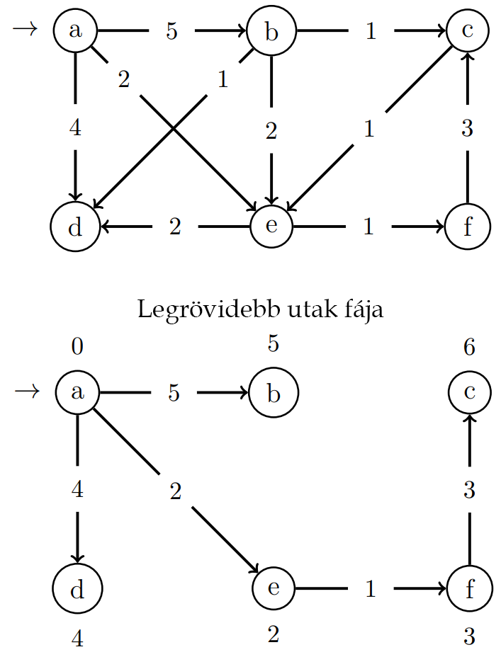

Algoritmusok és adatszerkezetek 2. > Legrövidebb utak egy forrásból > Legrövidebb út kereső algoritmusok bevezetés
Gyakori feladat, hogy egy gráf egy tetszőleges csúcsából bármelyik más csúcsokba vezető legrövidebb utakat keresünk. Gondolhatunk például navigációs rendszerre, ahol a feladat két város közti legrövidebb út meghatározása. Ezt egy gráf segítségével modellezhetjük, a városokat csúcsokkal, a köztük vezető utakat súlyozott élekkel reprezentálhatjuk.
Az élsúlyok a távolságokétól eltérő metrikákat is kifejezhetnek. Gyakran használják idő, költség, büntetés, veszteség vagy más olyan mennyiség megjelenítésére, amely egy út mentén lineárisan halmozódik, és amelyet minimalizálni szeretnénk. Korábban a szélességi bejárásnál az élek száma jelentette az út hosszát, most az élek súlyozását fogjuk figyelembe venni.
A megoldandó feladat általánosan: Adott egy $G : \mathcal{G}_{w}$ tetszőleges élsúlyozott gráf és $s$ start csúcs. Keressük a start csúcsból induló legrövidebb utakat minden olyan csúcsba, amely elérhető $s$-ből.
Befejezéskor egy legrövidebb utak fáját kapunk, azaz egy olyan $s$ gyökerű fát, amely az $s$-ből elérhető bármelyik $G$-beli csúcsba, egy $s$-ből kiinduló legrövidebb utat tartalmaz. Egy legrövidebb utak fája hasonló a szélességi keresés fájához, csak itt a kezdőcsúcsból kiinduló legrövidebb utakat az élek súlya szerint, nem pedig az élek száma szerint értjük.
A Bellman-Ford és a DAG negatív élsúlyokkal is tud dolgozni, a Dijkstra nem. Amennyiben a gráf tartalmaz a start csúcsból elérhető negatív összsúlyú kört, akkor a legrövidebb utak problémának nincs megoldása. Egy negatív összsúlyú körön újra és újra végighaladva folyamatosan legrövidebb utakat találnánk megállás nélkül. Amennyiben negatív élsúlyú gráfokkal dolgozunk, az algoritmusnak fel kell tudnia ismerni a negatív összsúlyú kört (Bellman-Ford algoritmus), ellenkező esetben végtelen működésbe kezdhet.
Alapvetően irányított gráfokkal foglalkozunk, de a feladat irányítatlan gráfok esetén is megoldható. Ebben az esetben nem engedhetünk meg negatív éleket egy forrásból sem, mivel ha az irányítatlan gráfban $(u, v)$ $s$-ből elérhető negatív él, akkor $< u, v, u>$ egy $s$-ből elérhető negatív kör.
Minden $u \in G.V$ csúcs esetén nyilvántartjuk az oda vezető eddig talált legrövidebb út hosszát: ezt $d(u)$ jelöli, valamint az $u$ csúcs közvetlen megelőzőjét, amit $\pi(u)$ jelöl. Az algoritmus működése során amennyiben egy $v \in G.V$ csúcs esetén az eddigieknél rövidebb utat találunk, akkor módosítjuk a csúcshoz tartozó $d(v)$ és $\pi(v)$ értékeket. A start csúcsra $d(s) = 0$ és $\pi(s) = \emptyset$, ha pedig egy $v \in G.V$ csúcs nem érhető el $s$-ből, akkor $d(v) = \infty$ és $\pi(v) = \emptyset$.
|
$d(v) > d(u) + G.w(u, v)$
|
||||
| $\pi(v) := u$ | $\text{SKIP}$ | |||
| $d(v) := d(u) + G.w(u, v)$ | ||||
Az alábbi algoritmusok közös vonása, hogy ismételten kiválasztanak és kivesznek egy csúcsot a feldolgozandó csúcsok halmazából, és a csúcsból kimenő összes élre végeznek közelítést. Ezeket a közelítéseket együtt a csúcs kiterjesztésének nevezzük, míg a csúcs kiválasztását a kiterjesztésével együtt a feldolgozásának nevezzük.